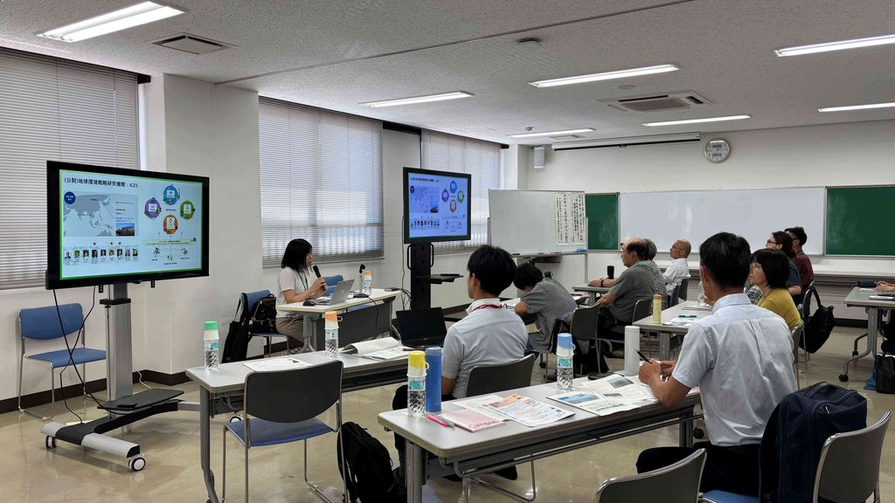
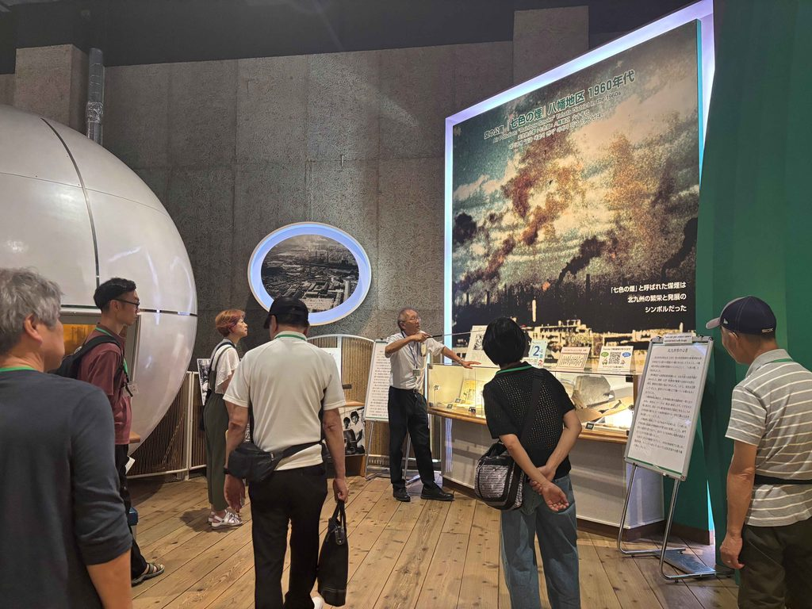
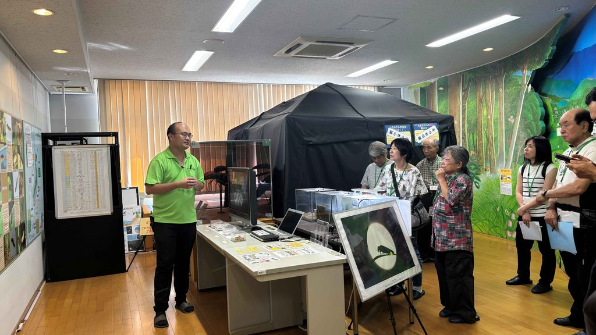
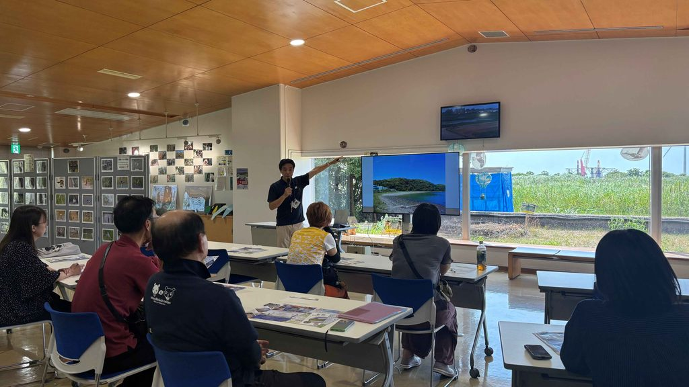
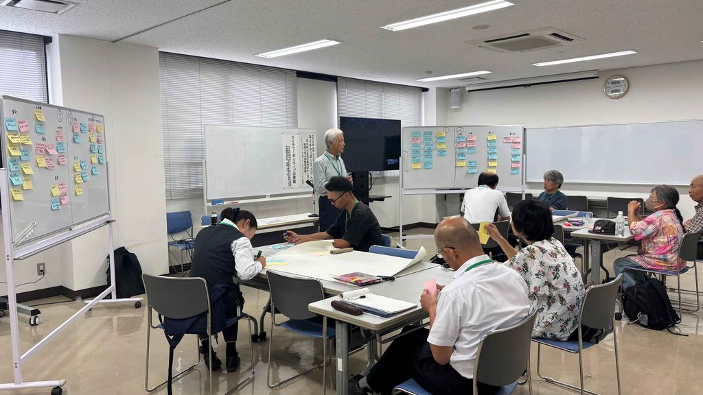

2030年までに自然の損失を食い止め、回復軌道に乗せる「ネイチャーポジティブ（自然再興）」という世界共通の目標をご存知でしょうか。ネイチャーポジティブに向けて、各地で様々な取組が進んでいます。北九州市では、「都市と自然が隣り合う＝アーバンネイチャー」という特徴を活かした環境保全施策を推進しています。
北九州市のアーバンネイチャーについて市民にもっと知ってもらい、ファンを増やすことを目的に企画・開講されたのが、市民カレッジ「ネイチャーポジティブ〜身近な実践から学ぶ、自然とともに生きるヒント〜」です。座学だけでなく、市内の自然・環境施設に足を運んで現場を見て、聞いて、感じるをコンセプトに、全5回にわたって自然と人の共生について学びを深めました。
今回は、市民カレッジ初のネイチャーポジティブに焦点を当てた講座となり、参加者のうち初受講の方が8割にのぼるなど、盛況となりました。全5回の歩みとともに、受講者の気づきをご紹介します。
第1回：ネイチャーポジティブって何？基本と考え方を学ぶ
• 会場： 生涯学習総合センター （2026年7月24日）
初回は「ネイチャーポジティブの基礎概念」と北九州市の取り組みについてのインプットからスタートしました。自己紹介を兼ねて「私の好きな北九州の自然」を参加者同士で語り合った後、グループワークを実施しました。
「たべよう」、「ふれよう」、「つたえよう」、「まもろう」、「えらぼう」など、日常や趣味の延長線上にあるアクションに目を向け、「自分なら何ができるか」「どうすればファンを増やし継続できるか」について、自由にアイデア出しをしました。
• 受講者の気づき：
「『自分事として考える』という視点で考える良い機会になりました」
「リサイクルひとつとっても多様な考え方があり、視点が広がりました」

第2回：北九州市の原点・タカミヤ環境ミュージアムで知る克服の歴史
• 会場： タカミヤ環境ミュージアム （2026年7月31日）
第2回は「北九州市の公害克服の歴史」に迫りました。「死の海」と呼ばれた洞海湾や「七色の煙」に覆われた空を、市民・企業・行政が一体となって回復させた歩みは、まさに北九州モデルであり、ネイチャーポジティブの原点と言えます。
さらに、SDGsやカーボンニュートラルなど、ネイチャーポジティブと並んで注目されている国際的な指針は、いずれも、「人間の社会は自然環境の基盤があって初めて持続可能になり得る」という根本的な考え方が共通していることを確認しました。人間が適切に関わる「里山の手入れ」の大切さについても学びました。
• 受講者の気づき：
「かつて『七色の煙』を見た世代として、北九州が進めてきた方向性の正しさを確認できた。この歩みを次世代へ伝えていきたい」
「地域の夏祭りでゴミ分別に協力してくれた子どもたちの姿を見て、こうした何気ない優しさや行動こそが原点だと感じました」

第3回：ホタルと生物多様性〜北九州市ほたる館
• 会場： 北九州市ほたる館 （2026年8月7日）
約50年にわたり市内全域で展開されてきたホタルの保全活動や、水質調査（指標生物）、全校ビオトープ設置などの先進的なアプローチを学びました。
世界に約2,800種いるホタルのうち、幼虫期を水中で過ごし成虫になっても明るく光る水生ホタル（ゲンジボタル等）は世界的にみてもごくわずかです。ひとつの種だけを守るのではなく、それを支える川や雑木林などの「生態系のつながり」全体を守る視点が不可欠であることを共有しました。
• 受講者の気づき：
「ひとつひとつの生物に生きる意味があり、多様性の大切さを実感した」
「学校や地域での保護活動が子どもたちに受け継がれているのを知り、今後にもつながる活動だと感じました」

第4回：廃棄物処分場から生き物の楽園へ〜響灘ビオトープ
• 会場： 響灘ビオトープ （2026年8月20日）
元々は埋立処分場だった場所が、自然の回復力と適切な人間のかかわりによって貴重な生き物が集まる湿地へと生まれ変わった現場を訪問しました。
かつての里山が人の手で守られていたように、現代の自然環境を維持・再生するためにも「人間の関わりや手助け」が必要であることを、現地観察を通じて感じ取りました。
• 受講者の気づき：
「生き物のつながりを人の手で守っていく取り組みがとても素敵でした」
「自然を守るには人の手が必要だと実感。弱くて強い生き物たちから学びを得ました」

第5回：ネイチャーポジティブの実践〜暮らしの中で考える
• 会場： 生涯学習総合センター （2026年8月28日）
最終回は、全5回を振り返る総まとめのグループワークを開催。各回を振り返って気づきを言語化する試みを通して、「ネイチャーポジティブとは何か？」を改めて考え、一人ひとりが今後できるアクションについて意見を出し合いました。
それを通して認識されたのは、「ネイチャーポジティブ＝今までとまったく違う特別な活動を始めることではない」ということです。
• ごみを減らす・分別する・拾う
• 省エネや地元の食材・旬のものを選ぶ
• 身近な自然と触れ合い、学んだことを周囲に伝える
こういった身近な行動を、「自然や生態系をより良くする（回復に向かわせる）」という視点で見直すことが、十分ネイチャーポジティブなのだという認識が共有されました。最終回は、そういった身近な北九州市の自然や自分達でもできることに気づき、見直す機会となりました。

おわりに：都市と自然が近い北九州だからこそ、おもしろい！
講座の最後に、「今の気持ちを漢字一文字で表すとしたら何か？」という問いに対して受講者のみなさんが挙げたキーワードは、「幸」、「知」、「恵」、「続」、「地」などでした。いずれも、本コースでの学びや気づきを良く表現していました。
今回訪問できたのは市内に多数ある自然関連施設のうち、3ヵ所だけでしたが、それでも、従来型の座学だけの講座から離れ、現場を見て、聞いて、感じるをコンセプトに開催されました。それによって、都市のすぐ隣に豊かな自然がある北九州市の良さや、公害から回復した過去が、まさにネイチャーポジティブそのものを体現していたこと、特別なことをする必要はなく、まずは足元の自然に興味を持ち、身近でできることからはじめる大切さなど、多くの気づきになったようです。